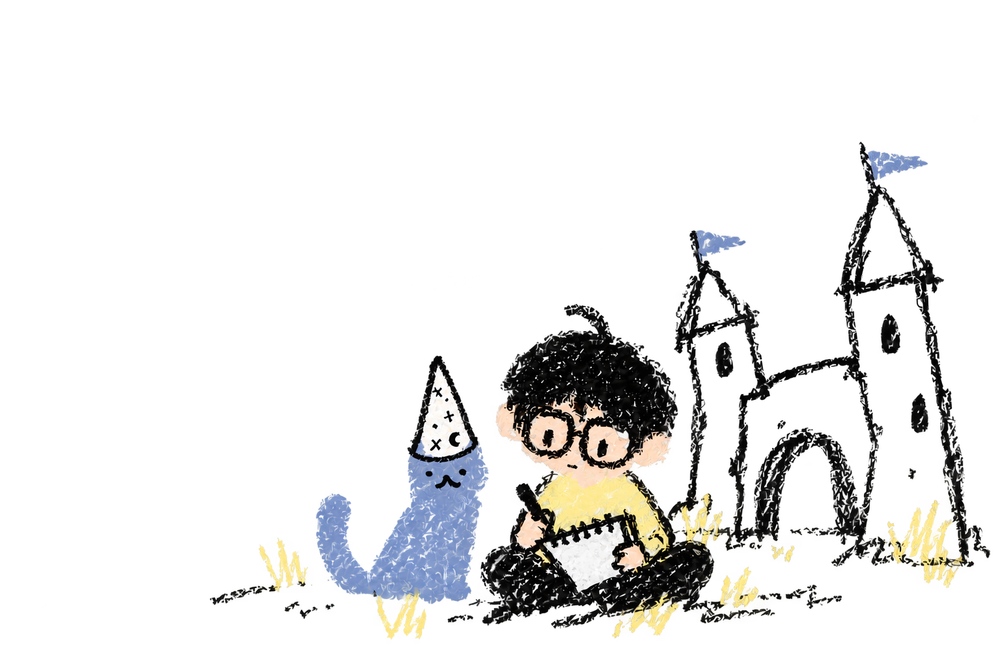

JUSTIN DAO · PRODUCT DESIGN
Hi, I’m Justin.
Let’s make
good things.
A designer in Toronto, turning everyday questions into thoughtful digital experiences.
View projects
On my drawing board.
A few ideas I’m exploring. Full case studies are on the way.
A few things I love.
FIELD NOTES / TRAVELKEEP THIS MOMENT
Take the scenic route.
Travel makes me notice how differently people live, move, and connect. Sometimes the best part is getting a little lost.
VIETNAM → CANADA → SEOUL
A little about me.
I’m an Information student in Toronto exploring the space between people, design, and technology.
I like asking questions, untangling complicated things, and noticing the details that make everyday experiences better.
THINGS I WANT TO KEEP DOING
Ask better questions.
Make things clear.
Leave room for play.
Care about the details.
Vietnamese roots.
Canadian chapters.
A few adventures in between.
Canadian chapters.
A few adventures in between.
Experience & education.
EDUCATION
University of Toronto
Bachelor of Information · Expected 2027
EXPERIENCE
Vale Base Metals
Commercial Risk Operations Co-op · 2026
TMA Solutions
UX/UI Design Intern · 2023
Apple
Specialist · Previous experience
MY TOOLBOX
FigmaUser researchPrototypingPower BIProcess mappingHTML / CSS / JavaScript